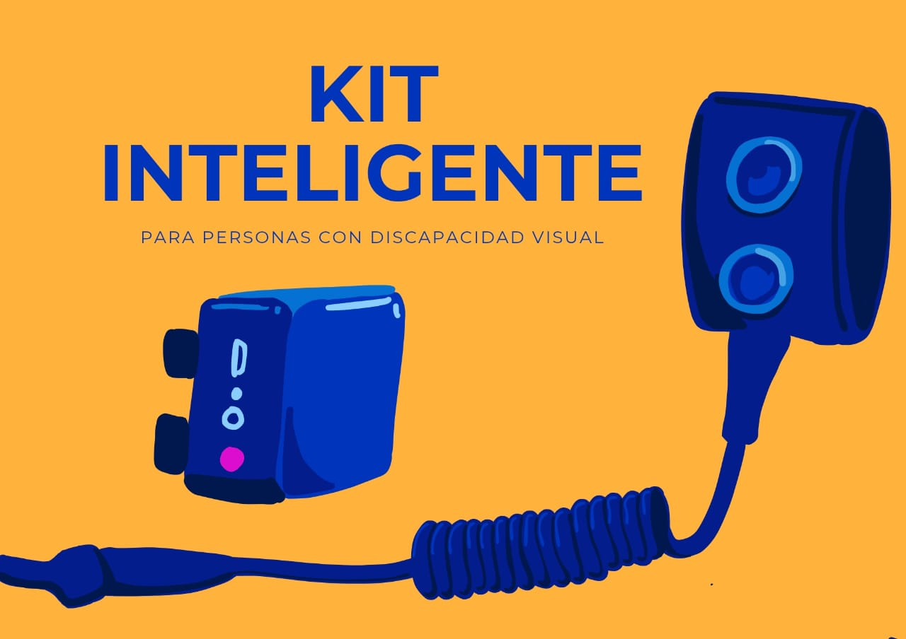
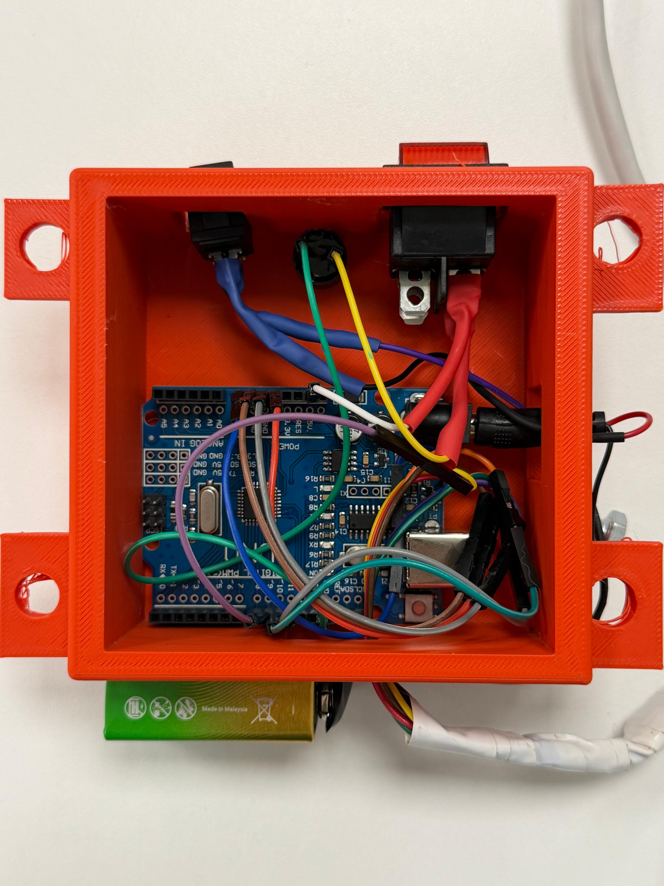
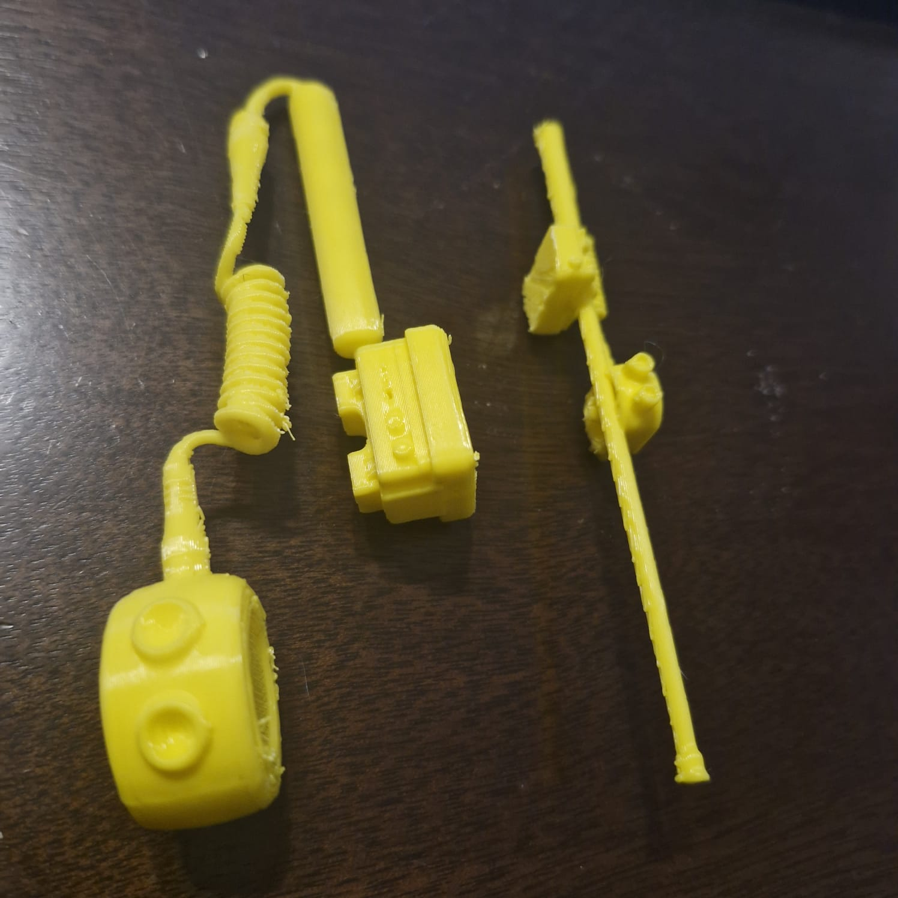

El proyecto en imágenes
Componentes, ensamblaje y pruebas del kit inteligente.
VisionPath transforma cualquier bastón convencional en un sistema inteligente capaz de detectar obstáculos mediante sensores ultrasónicos y alertar al usuario con vibraciones discretas y efectivas.

Los bastones tradicionales tienen limitaciones críticas que ponen en riesgo a millones de personas cada día.
Los bastones convencionales únicamente detectan obstáculos cuando existe contacto físico directo, sin anticipación alguna.
Ramas, señales y estructuras suspendidas pasan desapercibidas y pueden provocar lesiones graves al usuario.
VisionPath detecta obstáculos hasta 100 cm antes del contacto, dando tiempo suficiente para reaccionar.
Vibraciones discretas alertan al usuario sin interferir con la percepción auditiva del entorno.
Un kit inteligente y desmontable que convierte cualquier bastón tradicional en un sistema de asistencia activa.
Incrementar la seguridad, autonomía e independencia de las personas con discapacidad visual mediante tecnología accesible.
Diseñado para instalarse y retirarse fácilmente en cualquier bastón convencional, sin modificaciones permanentes.
Batería recargable que garantiza asistencia continua durante todo el día en cualquier entorno.
Componentes accesibles como Arduino y sensor HC-SR04, haciendo la tecnología disponible para todos.
Un flujo simple pero poderoso: detectar, procesar y alertar en milisegundos.
Emite pulsos ultrasónicos y mide el tiempo de retorno para calcular la distancia a obstáculos con precisión de centímetros.
El microcontrolador procesa la información del sensor en tiempo real y determina el nivel de alerta según la distancia.
Genera pulsos táctiles de intensidad variable: suaves a 60 cm y máximos a menos de 30 cm del obstáculo.
Alimenta el sistema de forma autónoma, con carga USB y autonomía de uso extendido durante el día.
Detecta obstáculos antes del contacto físico, reduciendo accidentes e impactos inesperados.
Permite desplazamientos más autónomos y seguros sin depender de asistencia externa.
Se monta y desmonta en segundos, compatible con cualquier bastón del mercado.
La vibración no interfiere con el oído, preservando la percepción auditiva del entorno.
Funciona en interiores, exteriores, de noche y bajo cualquier condición climática.
Basado en Arduino y componentes estándar, permite mejoras y adaptaciones por la comunidad.
Personas viven con algún grado de discapacidad visual en el mundo según la OMS.
Compatible con bastones convencionales de cualquier marca y material.
Asistencia permanente gracias a la batería recargable integrada.
Interferencia con la percepción auditiva del entorno del usuario.
Componentes, ensamblaje y pruebas del kit inteligente.





Las pruebas demostraron una mejora considerable en la detección temprana de obstáculos antes del contacto físico.
El sistema de vibración alertó al usuario de manera inmediata y discreta, sin interferir con su percepción auditiva del entorno.
El prototipo fue validado en distintos entornos: interiores, veredas y espacios públicos con alta afluencia de personas.
Una visión progresiva hacia la asistencia inteligente completa.
VisionPath busca mejorar la autonomía, seguridad e independencia de las personas con discapacidad visual mediante tecnología accesible y de bajo costo.